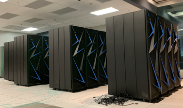

AiMOS Quick Start Information¶

The IBM Research AI Hardware Center is a global research hub headquartered in Albany, New York. The center is focused on enabling next-generation chips and systems that support the tremendous processing power and unprecedented speed that AI requires to realize its full potential. AiMOS (short for Artificial Intelligence Multiprocessing Optimized System) serves as the test bed for the IBM Research AI Hardware Center.
Contents:
- What is AiMOS?
- How to get a user id on AiMOS?
- How to login to AiMOS?
- Setting up the environment
- What is the GPFS disk space on the nodes?
- Slurm Resource Manager and Job Scheduler in AiMOS
- How to submit a job via Slurm
- How to load different modules for your development and testing?
- How to install the conda environment?
- How to install WML-CE (a.k.a PowerAI)?
- How to install Jupyter notebook?
- How to display the WebGUI for a jupyter notebook running on a compute node via ssh tunnelling?
- How to request for NVMe storage on the compute nodes?
- Example for using ddlrun to run a distributed job?
- Getting Help?